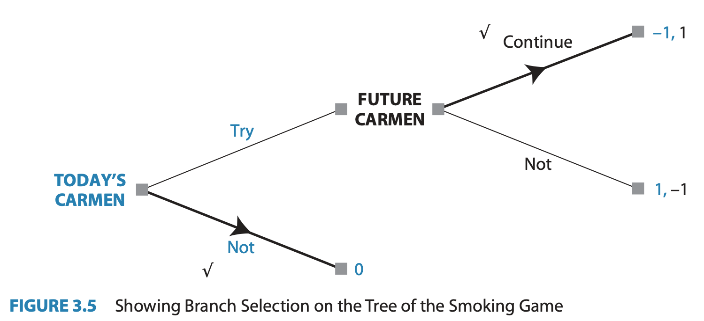

Backwards Induction
Solving Sequential Games
Now that we have defined all the parts of what a sequential game is we can start to solve them.
. . .
- A solution in our case will be a prediction of what rational agents would do in a sequential game
The smoking decision
Do I want to try smoking today?
Suppose today I can either Try smoking for the first time, or Not try
If I choose Try today, then I will have another choice in the future:
Continue smoking, or Quit
The smoking decision
Let’s create some preferences over the three different outcomes:
\(U(\text{Not}) = 0\) - I’m no worse off, but don’t get to experience what it’s like
\(U(\text{Try}\rightarrow\textbf{Quit}) = 1\) - I get the experience of smoking without long-term health consequences, etc.
\(U(\text{Try}\rightarrow\textbf{Continue}) = -1\) - I become an addict
The smoking decision
Let’s model this as a decision tree 
The smoking decision
What would a rational version of myself choose?
Is this realistic?
Why might Trying and then Quitting be a bad idea?
The smoking game
We can apply the tools of game theory to this decision:
Let’s add future Dante as another player who acts at the second decision node
Future Dante is different from Present Dante because he has different preferences:
\(U_{FD}(\text{Continue}) = 1\) because he’s already addicted
\(U_{FD}(\text{Quit}) = -1\) because withdrawl is painful
The smoking game

The smoking game
What will Future Carmen choose?
Should Carmen choose to Try smoking if she knows what her future self would choose?
‘Pruning’ branches
If Carmen is forward looking, knows her future self’s preferences, and knows that her future self is rational,
Then she can eliminate the possibility that her future self would quit.
- Pruning is this type of logic applied to eliminating certain branches in a game tree.
‘Pruning’ branches
If Future Carmen will never choose to Quit smoking once she is already an addict,
what choices is Today’s Carmen left with?
Try knowing that she will continue in the future and get -1 payoff
or Not try smoking today and earn 0 payoff
Backwards Induction (intuitively)
Let’s outline the logical steps we used to solve this game:
We were uncertain about what would happen in this game, because Today’s Carmen’s optimal strategy depended on what Future Carmen woud do
But Future Carmen is the last player in this game, so her choice only depends on her own preferences
Knowing what Future Carmen would choose allowed us to find Today’s Carmen’s best strategy
Smoking Game Solution

- Either crossing off eliminated branches or highlighting chosen branches works
- Just make sure that the order of thinking is clear
Backwards Induction defined
The method of looking at decisions in the future to decide what to do now is called Backwards Induction or Rollback
… using rollback requires starting to think about what will happen at all the terminal nodes and literally “rolling back” through the tree to the initial node…
Backwards Induction defined
The method of looking at decisions in the future to decide what to do now is called Backwards Induction or Rollback
When all players do rollback analysis to choose their optimal strategies, we call this set of strategies the rollback equilibrium3 of the game; the outcome that arises from playing these strategies is the rollback equilibrium outcome
Solving the Kidnapping Game

- If Vivica paid ransom, Guy would rather Release
- If Vivica didn’t pay, Guy would rather Kill
- Knowing this, Vivica would Pay to avoid Orland being killed
- Therefore, Guy should kidnap Orlando knowing that Vivica will pay and he can release Orlando
Kidnapping Game Solution
The Rollback Equilibrium is:
- { (Kidnap, Release, Kill), (Pay) }
You should read this as:
Guy Kidnaps and will Release if Vivica Pays, but will Kill if Vivica Doesn’t Pay
Vivica Pays the ransom
Adding more players
3-player planting game
Emily, Nina, and Talia are roommates who want to get a start on their communal garden.
They like to enjoy the benefits of fresh produce and green space, but it is costly for them to put the work in.
2 or 3 people working is enough to keep the garden healthy, but if 1 or 0 work, then the garden will die.
Planting Game payoffs
| outcome: | utlity: |
|---|---|
| I don’t contribute, but garden lives | 4 |
| I contribute, and get garden. | 3 |
| I don’t contribute, and garden dies | 2 |
| I contribute, but garden dies | 1 |
Planting Game Tree

Rollback in the Planting Game
Who should we start with to solve this game?
- Talia, because she is the last one to move, her choices don’t depend on other players
Rollback in the Planting Game
How many strategies does Talia have?
16 total complete strategies
CCCC, CCCD, CCDC, CCDD, CDCC, CDCD, CDDC, CDDD, DCCC, DCCD, DCDC, DCDD, DDCC, DDCD, DDDC, DDDD
Rollback in the Planting Game
Which of Talia’s strategies can be eliminated as irrational?
- Any which include an action which would lead to a lower payoff than another possible action at the same node
Rollback in the Planting Game
Let’s simplify the game by pruning Talia’s eliminated branches
- Draw new tree on board with only Emily and Nina’s branches,
- replace Talia’s decision nodes with new terminal nodes with payoffs corresponding to non-pruned end branches
Rollback in the Planting Game

Equilibrium Path of Play
Note that there is one continuous path we traced from the initial node to a final equilibrium outcome.
However, we couldn’t have gotten their without the other arrows paths even though they are never reached in equilibrium.
Recall that a strategy is a collection of choices at every decision node.
Equilibrium Strategies
Even though the players available actions are all called the same (Contribute or Don’t), this tree provides labels of each decision node so we can say something like:
“Nina’s strategy in the rollback equilibrium is { Don’t Contribute at b, Contribute at c }”.
- To make it even shorter, let’s call this strategy DC.
Rollback Equilibrium Strategies
The equilibrium is: